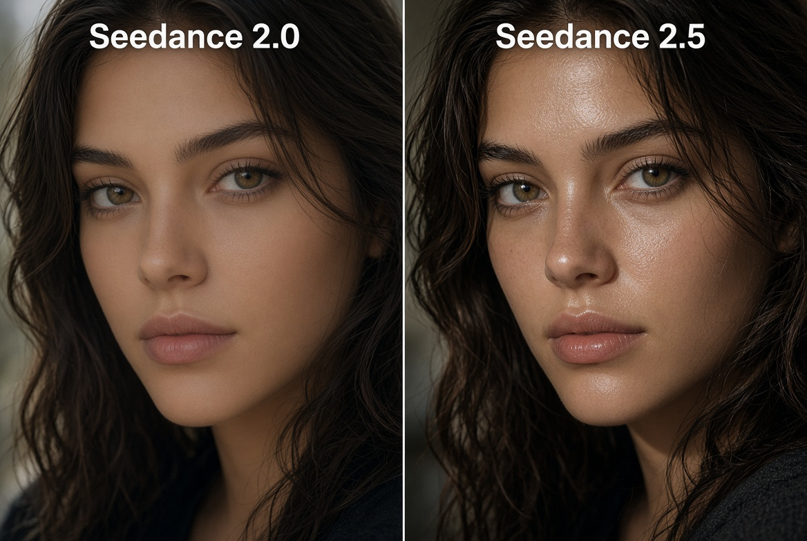
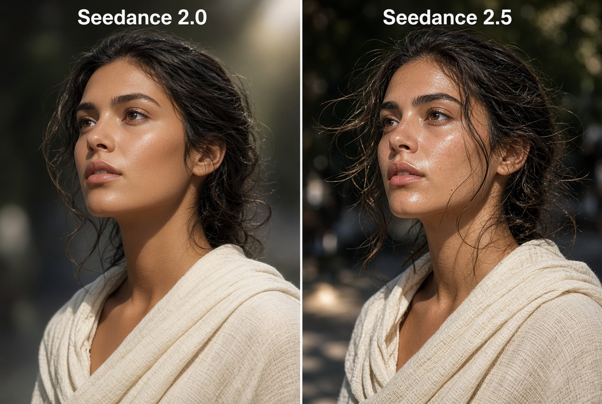

I’ve spent decades inside interactive entertainment and low-latency systems—arcade work, patents focused on cutting motion-to-photon lag in wearables and VR, and current projects around verifiable human skill and creative tools. I do not run a production pipeline on these models every day. I simply stay current because the distance between “interesting demo” and “tool you can actually ship with” keeps shrinking, and that has direct consequences for anyone making skill-based platforms, music visuals, ads, or community content.
Seedance 2.5 is the clearest recent step into that usable zone. Released by ByteDance in July 2026 and now available on platforms including Higgsfield AI, it is positioned as a production-oriented upgrade over Seedance 2.0 rather than a pure research flash.
Where the Gap Shows Up Fastest
The biggest and fastest difference is in faces. Side-by-side tests and recent platform comparisons (including 1080p tests on Higgsfield) show 2.5 pulling ahead on skin texture, pores, moisture, and how light reacts to the surface. 2.0 already looked strong; 2.5 reduces the “wax” or plastic look that still appears under scrutiny.


Testers repeatedly call out less plasticky skin, tighter character details, better catchlights in the eyes that hold through camera movement, and materials that keep structure instead of turning into painted surfaces. In close-ups the jump is the most obvious; it also carries better into wider frames and longer 30-second takes.
The Practical Upgrades
30-second single pass
Native generation doubles from roughly 15 seconds. Enough for a full ad beat, a music verse, or a short narrative arc with beginning, middle, and payoff in one continuous take. Multi-round extension further lengthens usable sequences while preserving audiovisual continuity.
Up to 50 references
Images, video clips, and audio can be combined in a single generation (commonly reported as 30 images / 10 video / 10 audio). Role tagging lets the model treat inputs as identity, product, style, camera, or voice rather than guessing.
Native audio + region edit
Sound is generated in the same pass and stays synchronized to action and dialogue. Region-level editing lets you fix one face, object, or element without regenerating the entire clip—an operational change that reduces wasted iterations.
~20% better prompt adherence
ByteDance’s claim, echoed in early platform reports. Fewer wasted generations and tighter following of complex multi-subject direction matter when every second of generation has a cost.
What Else Turned Up in Research
- • 3D white-box / blockout support — rough untextured geometry can drive camera path and staging before full lighting and texture. Useful for previz pipelines that already work in Blender or Maya.
- • Stronger multi-shot storytelling inside a single generation. The model can organize setup, development, turning point, and resolution rather than simply extending a single moment.
- • Green-screen and targeted editing modes that keep the rest of the frame intact while swapping backgrounds or specific objects.
- • Multilingual generation across 10+ languages with improved lip-sync and instruction following.
- • Character consistency across camera moves that previously broke earlier models—faces, wardrobe, and lighting hold through orbits and multi-shot sequences more reliably.
Side-by-Side Findings That Keep Recurring
Across independent tests (Higgsfield category comparisons, YouTube head-to-heads using identical prompts, and platform write-ups), several patterns appear repeatedly:
- Skin texture and pore-level detail hold longer under close scrutiny on 2.5; 2.0 more often drifts into smoothed or plastic surfaces once light intensity rises.
- Fabric weave and secondary motion (hair, clothing, debris) respond more believably to physics and camera movement.
- Character identity survives wider camera orbits and multi-shot sequences with less drift.
- Acting and micro-expression quality improves when dialogue is present—faces move with the words rather than remaining stiff.
- Complex multi-subject or high-information scenes break less often on 2.5; 2.0 can lose coherence when too many elements compete.
Resolution nuance matters: some early 2.5 deployments generate at 480p/720p with optional upscaling, while 2.0 already ships native higher resolutions on several platforms. Teams that need absolute pixel count today may still prefer 2.0 for final delivery while using 2.5 for longer narrative and consistency work.
Why This Matters Beyond Pretty Pictures
For creative teams the combination of longer coherent clips, larger reference budgets, native audio, and region editing shortens the path from prompt to something a client or greenlight meeting can actually evaluate. Brand assets stay locked, characters hold identity, and the audio is already present. Weeks of revision cycles can compress when the model itself carries more of the continuity load.
From a systems and skill-based perspective the interesting question is not whether AI can make beautiful frames. It is how quickly these tools become reliable enough to sit inside real workflows without constant cleanup, and whether the human signal—verifiable skill, intention, authorship—remains legible. Seedance 2.5 does not answer that larger question, but it moves the practical threshold.
Closing
I am still evaluating the model myself on Higgsfield and related surfaces. The faces alone make the upgrade worth a direct test. For anyone whose work sits at the intersection of interactive systems, creative production, or verifiable human performance, the gap between demo and usable tool just narrowed again.
Test it. Keep the human score.
Sources & Further Reading
- ByteDance Seed Team official announcement and feature list (July 2026)
- Higgsfield AI platform documentation and category comparison tests
- Independent side-by-side analyses (VIDEOAI.ME, OpenArt, Starrd, platform blogs)
- Community and YouTube head-to-head tests using identical prompts across 2.0 and 2.5
- API and provider notes on reference limits, resolution tiers, and region editing